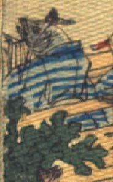

魚の化物。頭部は墨色で、烏帽子状のものをかぶり、体に青と水色の縞模様の着物をまとっている。座って、胸元に楽器らしきものを持っている。
著作者：J.Dautremer／出典：親書誌：U426_nichibunken_0118：Monseigneur sac de riz／日付：2006／資源識別子：U426_nichibunken_0118_0003_0012
Copyright (c)2010- International Research Center for Japanese Studies, Kyoto, Japan. All rights reserved.